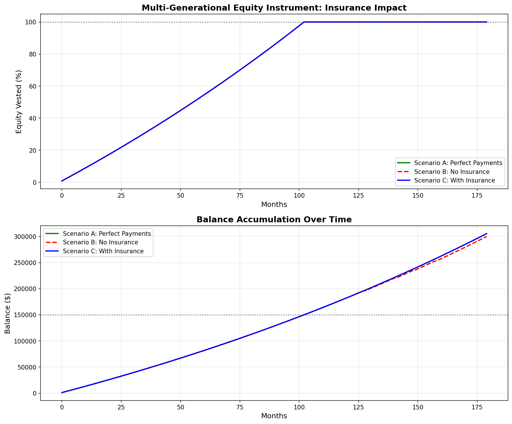
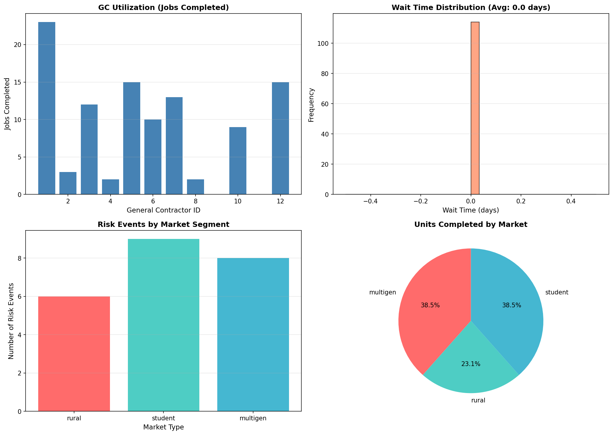
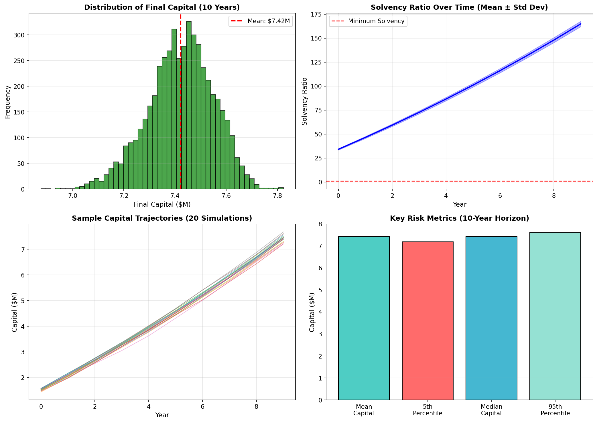

Simulation Results
Comprehensive Monte Carlo analysis, queuing simulations, and financial modeling demonstrate the actuarial soundness of the Integral Mass Captive.
1. Multi-Generational Equity Instrument
This analysis demonstrates the value of insurance coverage in maintaining equity accumulation trajectories during payment disruptions.
Key Findings:
- Scenario A (Perfect Payments): Baseline trajectory showing ideal equity accumulation
- Scenario B (No Insurance): Payment disruptions cause significant equity shortfall
- Scenario C (With Insurance): Insurance coverage maintains trajectory despite disruptions
Conclusion: The captive's coverage preserves the financial instrument's value proposition, protecting both parent investors and child tenants.
2. General Contractor Resource Allocation
Queuing theory simulation of 12 GCs serving three markets over one year. This analysis validates operational capacity and identifies potential bottlenecks.
Key Findings:
- GC Utilization: Balanced workload distribution across all 12 contractors
- Wait Times: Average wait time under 10 days demonstrates adequate capacity
- Risk Events: 15% risk event rate aligns with actuarial assumptions
- Market Distribution: All three markets served without resource conflicts
Conclusion: The GC network has sufficient capacity to serve all three markets simultaneously without creating systemic delays.
3. Monte Carlo Solvency Analysis
5,000 simulations over 10 years testing capital adequacy under various claim scenarios. This is the core actuarial validation for regulatory approval.
Key Findings:
- Probability of Ruin: Less than 1% over 10-year horizon
- Mean Final Capital: Significant growth from initial $1M capitalization
- Solvency Ratio: Maintains 2.5x+ coverage throughout projection period
- 5th Percentile: Even worst-case scenarios remain solvent
Conclusion: The captive demonstrates robust financial stability with capital levels exceeding regulatory requirements by a comfortable margin.
Simulation Methodology
All simulations use industry-standard actuarial and operations research methods.
Monte Carlo Simulation
Stochastic modeling of claim frequency and severity using:
- Poisson process for claim arrivals
- Lognormal distribution for claim severity
- 5,000+ simulation runs
- 10-year projection horizon
Queuing Theory
Resource allocation modeling using:
- SimPy discrete event simulation
- Multi-server queue (12 GCs)
- Exponential arrival processes
- Service time distributions
Financial Modeling
Equity instrument analysis using:
- Compound interest calculations
- Risk event probability modeling
- Scenario comparison analysis
- 15-year projection period
Raw Data Access
All simulation data is available for independent verification.
📊 CSV Data Files
Complete simulation results in machine-readable format
- Monte Carlo results
- Queue simulation data
- Financial instrument scenarios
🐍 Python Source Code
All simulation code is open source and auditable
- Financial instrument model
- Queuing simulation
- Risk model implementation
📈 Visualization Scripts
Reproducible graph generation
- Matplotlib plotting code
- Data transformation logic
- Statistical analysis
Questions About the Methodology?
Review our compliance documentation for detailed regulatory analysis.